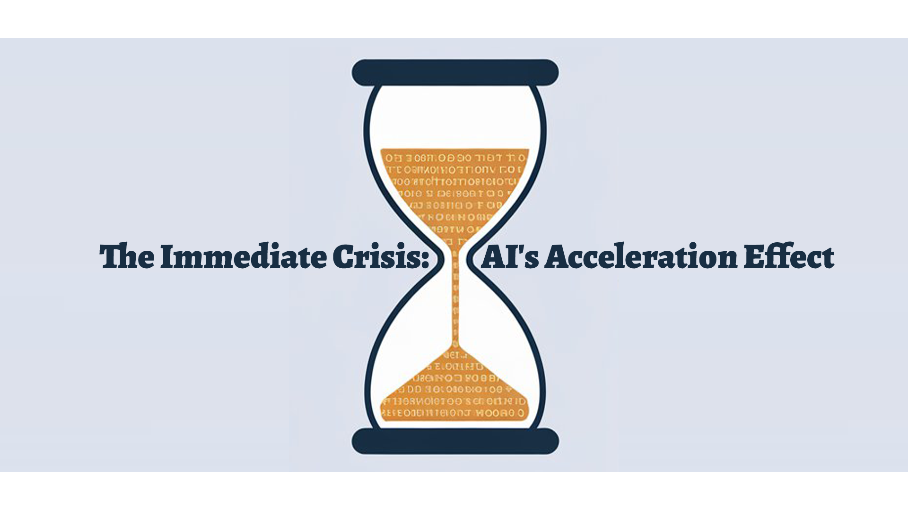
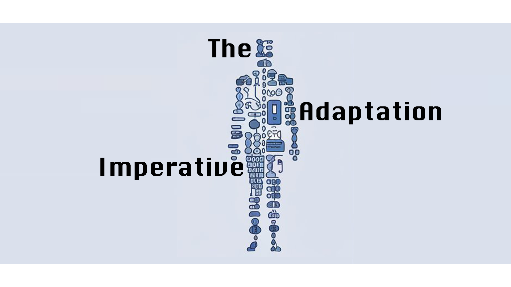
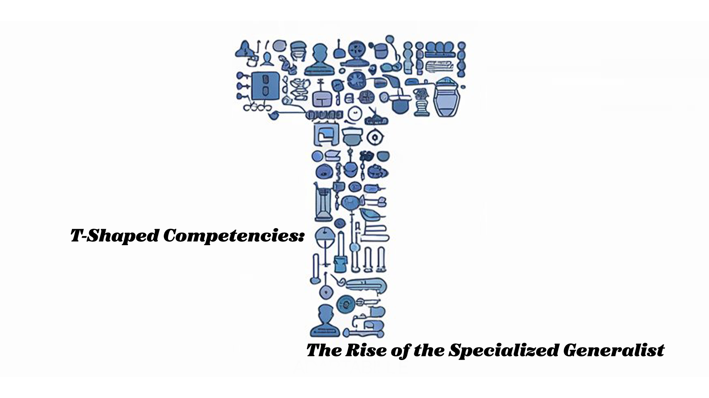
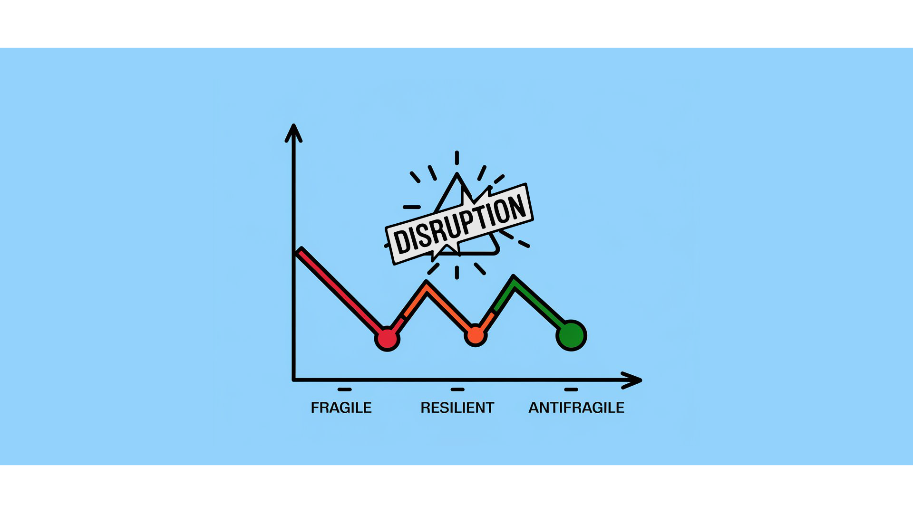
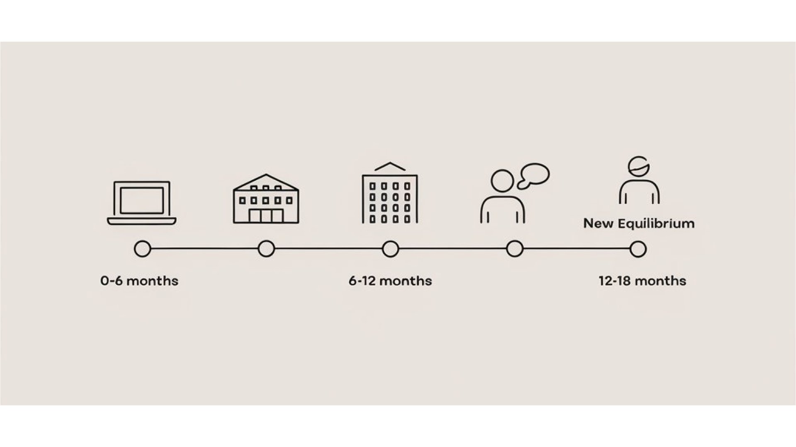
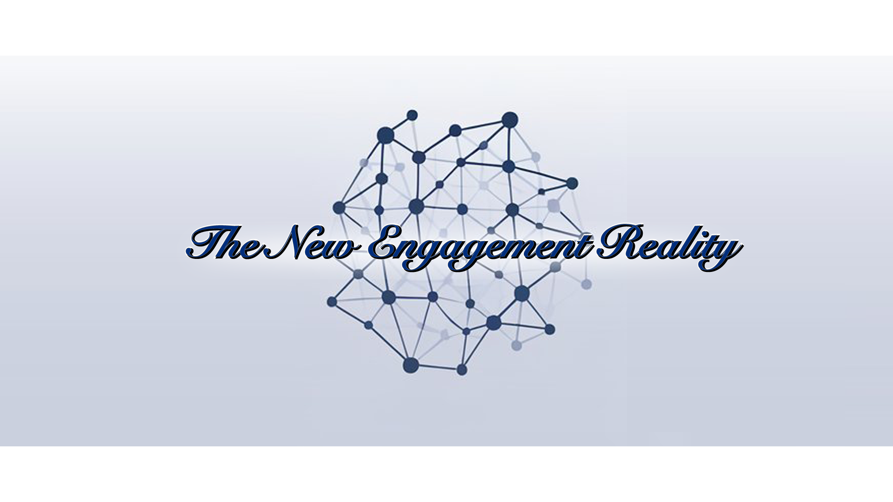

No Collar Jobs—Beyond the AI Disruption
Psst! AI just overturned the job market applecart: It's not just a bad year—it's a swirling shift. Experience is now your biggest liability, and your resume? It’s more like a relic in this new AI-augmented world. Tune in to navigate the chaos—or watch as "Apply Now" becomes "Apply Never."


It is not the strongest of the species that survives, nor the most intelligent that survives. It is the one that is most adaptable to change.
Executive Summary
The technological employment landscape is undergoing a fundamental structural reconfiguration, driven by the rapid advancement of AI and its integration into business processes.
24 mWe analyze the 18-24 month horizon that should bring new equilibrium and provide frameworks for navigating this transition effectivelyThis paper examines the hidden transformation behind surface-level manifestations, exploring the paradigm shift occurring across multiple system levels. We analyze the 18-24 month horizon that should bring new equilibrium and provide frameworks for navigating this transition effectively. By understanding the systemic nature of this change, organizations and individuals can gain strategic advantages in adapting to the emerging technological paradigm.
Key findings include:
- The AI-driven transformation represents a systemic reconfiguration of value creation architecture, not merely technological disruption.
- Traditional experience and skills are becoming liabilities as the paradigm shift requires fundamentally different capabilities and mindsets.
- Organizations must move beyond AI adoption to AI adaptation, reconceptualizing their entire operational framework.
- The emerging Capability Discontinuity necessitates new approaches to talent assessment, development, and integration.
- Thriving in today's world requires antifragility, not just resilience.
40%Workers recognize AI's productivity amplification potential—evidenced by BCG consultants achieving 40% quality improvements through…This paper offers practical guidance for organizations and individuals to thrive in the evolving AI-driven economy.
The Immediate Crisis: AI's Acceleration Effect

"Hey everyone, does anyone know of any great tech recruiters for job placements? I'm casually exploring new management roles in tech while still at my current company. I've applied to 20 jobs online over the past month and haven't heard back from any—feels like a strange shift compared to when recruiters were constantly reaching out."
79%The lag between recognition (79% of leaders acknowledge AI's competitive criticality) and implementation (only 12% of HR departments…This seemingly innocuous group chat message captures the disorienting experience confronting countless tech professionals—a profound dislocation in employment dynamics that defies conventional economic explanations. What appears as merely frustrating job-hunting friction actually represents the visible manifestation of a fundamental restructuring of the technological labor ecosystem. The experience isn't merely anecdotal; it's indicative of a systemic reconfiguration that demands rigorous examination.
Meta's Paradigmatic Transformation
To understand this phenomenon, we must first recognize its archetype: Meta's strategic metamorphosis. In 2023, Meta executed what superficial analyses framed as mundane cost-cutting—approximately 25% workforce reduction across two major layoff waves. Yet this interpretation fundamentally mischaracterizes what was actually occurring. Simultaneously, Meta increased AI infrastructure investment by $10 billion—a capital reallocation that reveals not corporate contraction but strategic redirection.
This dual-vector transformation—human capital reduction alongside exponential AI investment—represents a microcosm of the broader technological ecosystem's evolution. Meta's actions weren't merely adjusting operational expenditures but fundamentally reconceptualizing the company's productive architecture. The corporation wasn't simply becoming "leaner"; it was reconfiguring its entire operational paradigm.
What makes this particularly revelatory is that Meta isn't experiencing financial distress necessitating workforce reduction. Rather, it represents a deliberate strategic pivot—an accelerated evolution toward an AI-augmented operational model. This pattern repeats across the technological landscape, where profitable enterprises are simultaneously reducing human capital while expanding AI investments. The pattern transcends individual corporate decisions, revealing a systemic transformation.
The Capability Discontinuity
This transformation introduces a Capability Discontinuity—a rupture in the traditional relationship between experience and value. Historically, technological transitions maintained significant conceptual continuity. The progression from Web 1.0 → 2.0 → mobile → cloud represented evolutionary adaptations where prior expertise remained valuable through translation to adjacent domains.
The current transformation fundamentally differs. Senior engineers with decades of deterministic programming experience now face a paradigm where probabilistic models render significant portions of their expertise not merely outdated but actively misaligned with emerging requirements. Experience paradoxically becomes a liability rather than an asset, as deeply ingrained mental models actively interfere with adaptation to fundamentally different architectural approaches.
This explains a counterintuitive market observation: senior professionals experiencing disproportionate displacement despite ostensibly possessing greater adaptive capacity. The discontinuity isn't merely technological but epistemological—requiring not incremental adaptation but comprehensive reconceptualization of fundamental assumptions about computational systems.
The implications extend beyond individual career disruption to organizational capability. Enterprises must simultaneously maintain legacy systems while developing fundamentally different architectural approaches—creating internal structural tensions that resist traditional managerial resolution techniques.
The BYOAI Phenomenon of Shadow Transformation
78%The HR Trends Report identifies this as the “BYOAI Phenomenon,” where 78% of knowledge workers utilize AI tools without organizational…While organizational strategies evolve, individual adaptation accelerates through Shadow Transformation—unsanctioned technological adoption that outpaces official implementation. The HR Trends Report identifies this as the “BYOAI Phenomenon,” where 78% of knowledge workers utilize AI tools without organizational oversight or governance.
This grassroots adaptation creates a bifurcated reality: official organizational structures operate according to pre-transformation paradigms while actual work processes increasingly leverage AI augmentation. The productivity differential between these approaches widens, creating unsustainable internal tensions. Workers recognize AI's productivity amplification potential—evidenced by BCG consultants achieving 40% quality improvements through ChatGPT utilization—yet organizational policies lag behind operational realities.
This creates a profound asymmetry: enterprises that formally integrate AI capabilities achieve compound productivity advantages while those maintaining artificial barriers between official and unofficial technological utilization experience growing operational friction. The lag between recognition (79% of leaders acknowledge AI's competitive criticality) and implementation (only 12% of HR departments formally integrate AI) creates vulnerability to accelerated disruption.
Matching Infrastructure Collapse
The immediate manifestation of this transformation—experienced as application non-response—represents more than mere hiring slowdown. It reveals fundamental breakage in traditional talent matching infrastructure. The traditional application ecosystem operated on assumption sets rendered obsolete by the transformation underway.
Traditional recruiting infrastructure was designed for incremental skill evolution rather than paradigmatic realignment. The classification systems underpinning applicant tracking systems utilize taxonomies that fail to capture emerging capability requirements. This explains why relationship-based hiring has become predominant—it represents not nepotism but adaptive response to classification breakdown.
The data reveals this starkly: despite a four-fold increase in job advertisements without degree requirements, only one in 700 hires actually occurs through genuinely skills-based assessment. The rhetoric of skills-based hiring collides with operational reality—organizations lack mechanisms to effectively evaluate capabilities outside traditional credentialing frameworks.
This creates a circular constraint: organizations need different capabilities but lack mechanisms to identify them in nontraditional candidates. Meanwhile, candidates possessing relevant capabilities cannot signal them through existing credentialing frameworks. The resulting friction manifests as application non-response—a symptom of fundamental misalignment rather than mere hiring hesitancy.
The Integration Imperative
This transformation represents not merely technological disruption but comprehensive reconfiguration of value creation architecture. Organizations face an integration imperative—they must synthesize technological capabilities with human capital through fundamentally different frameworks than previously employed.
As the HR Trends Report identifies, only 26% of companies utilize internal talent marketplaces despite 40% of executives believing AI will drive growth. This implementation gap creates asymmetric advantage for organizations that successfully bridge recognition and operationalization.
Organizations that effectively navigate this transition recognize that merely overlaying AI capabilities onto existing operational structures proves insufficient. The transformation requires fundamental reconsideration of how work is conceptualized, allocated, evaluated, and integrated across human and technological capabilities.
The immediate crisis thus represents not merely employment friction but system-level reconfiguration—a comprehensive transformation that renders previous organizational architectures increasingly misaligned with emerging value creation mechanisms. Organizations and individuals that recognize this systemic nature gain strategic advantage through adaptation aligned with transformation fundamentals rather than superficial symptom management.
The non-response to 20 job applications isn't merely unfortunate timing—it's the visible manifestation of a technological paradigm shift that demands fundamentally different approaches to both organizational design and individual adaptation strategies.
The Hidden Transformation
The current technological employment disruption represents a fundamental paradigm shift, not a cyclical adjustment. Viewing it as a temporary deviation that will return to familiar equilibrium critically misunderstands the transformation underway. What we're experiencing is not just an adjustment, but a wholesale reinvention of work itself - from its most basic definitions to its highest-level implementations.
Unpacking the complexities of this transformation requires a keen analytical approach to understand how it will reshape the landscape for workers, businesses, and our broader social structures. Surface-level disruptions mask deeper structural changes. These changes signal not fleeting dislocation, but systemic reconfiguration of our entire work and value creation architecture—one that will reshape the economic landscape for decades.
Key aspects of this transformation include:
- Architectural reorganization from monolithic to modular computational systems
- Decision-making redistribution from hierarchical to networked information processing
- Value creation reconceptualization from incremental to exponential productivity scaling
- Capability valuation transformation from experience-based to adaptation-capacity assessment
Organizations and individuals recognizing this systemic nature gain strategic advantage through adaptation aligned with transformation fundamentals rather than superficial symptom management.
Beyond Cyclical Unemployment and Technological Transformation
The HR Trends Report cuts to the chase:
"Tech and AI aren't some far-off future - they're reshaping how businesses operate right now, from top to bottom."
This simple statement packs a punch that many are missing. We're not just riding out another economic wave here. The very foundations of how businesses create value are being rebuilt.
Consider Meta's recent moves: slashing 25% of their workforce while pouring $10 billion into AI. That's not your typical cost-cutting - it's a complete overhaul of how they operate. And Meta's not alone. This pattern is playing out across the tech sector, even among profitable companies.
This shift is happening faster than most realize. What used to take a decade is now unfolding in months. It's throwing off our usual economic indicators - unemployment rates, job creation numbers, salary trends. They're becoming less reliable as signs of what's really going on under the hood.
Here's the risk: if we keep trying to understand this through our old economic cycle playbook, we're going to misdiagnose both the problem and the solution. This isn't just change within the system - the system itself is being rewired.
Systemic Reconfiguration
The magnitude of workforce reduction (30-60% in technology sectors) fundamentally contradicts cyclical unemployment patterns. Cyclical contractions typically manifest as incremental adjustments (5-15%) reflecting demand fluctuation rather than structural reorganization. The current magnitude signals not adjustment but wholesale reconfiguration.
What makes this particularly revelatory is the contradiction between workforce reduction and capital allocation. Historical cyclical unemployment correlates with reduced capital expenditure as enterprises preserve capital during perceived temporary contraction. The current pattern inverts this relationship—aggressive capital deployment alongside workforce reduction. This inversion signals not contraction but transformation.
The reconfiguration manifests across multiple dimensions simultaneously:
- Architectural reorganization: From monolithic to modular computational systems
- Decision-making redistribution: From hierarchical to networked information processing
- Value creation reconceptualization: From incremental to exponential productivity scaling
- Capability valuation transformation: From experience-based to adaptation-capacity assessment
This multidimensional transformation renders traditional employment frameworks increasingly misaligned with emerging operational requirements. Organizations utilizing pre-transformation hiring frameworks attempt to evaluate post-transformation capabilities through fundamentally incompatible assessment mechanisms.
The Implementation Gap
The skills taxonomy disruption reveals this misalignment starkly. The rhetoric-reality gap (4× increase in non-degree job advertisements versus 1/700 hires actually occurring through skills-based assessment) doesn't merely represent implementation lag but fundamental conceptual inadequacy.
Organizations proclaim skills-based hiring while lacking frameworks to operationalize this approach. The traditional credential-proxy approach to capability assessment fails precisely because emerging capabilities resist traditional credentialing mechanisms. The resulting contradiction manifests as paradoxical hiring behavior—stated openness to non-traditional candidates while actual hiring patterns reveal continued reliance on traditional proxies.
This contradiction reflects deeper conceptual inadequacy. Organizations lack taxonomic frameworks to effectively categorize, evaluate, and integrate emergent capabilities. Taxonomies aren't merely organizational tools but conceptual architecture—they shape what capabilities organizations can effectively recognize and incorporate.
The HR Trends Report identifies this precisely:
"Only 26% of companies use talent marketplaces despite 40% of executives believing AI will drive growth."
This implementation gap doesn't merely represent operational friction but fundamental conceptual limitation—organizations cannot implement what they cannot adequately conceptualize.
From Task Automation to Systemic Intelligence
The evolution from AI adoption to AI adaptation represents a fundamental shift in technological integration approach. Initial AI implementation focused on task automation—discrete process optimization through technological augmentation. The emerging paradigm fundamentally differs—systemic intelligence that reorganizes entire operational frameworks rather than merely enhancing existing processes.
This transition requires fundamentally different integration approaches. Task automation could occur within existing organizational structures with minimal architectural disruption. Systemic intelligence necessitates comprehensive operational reconfiguration—fundamentally altering how information flows, decisions manifest, and value creation occurs.
The HR Trends Report encapsulates this shift succinctly:
"The focus is moving from AI adoption to AI adaptation."
This distinction isn't semantic but foundational. Adoption implies incorporating new capabilities within existing frameworks; adaptation implies transforming frameworks themselves to leverage emerging capabilities.
Organizations approaching AI as merely additive technology fundamentally misconceptualize the transformation underway. The technology isn't merely enhancing existing capabilities but reconstituting the capability development framework itself. This reconstitution renders traditional capability development approaches increasingly misaligned with emerging requirements.
The Algorithmic Organization
The emerging algorithmic organization fundamentally differs from traditional organizational architecture. Traditional enterprises operated through hierarchical information processing with linear decision pathways and incremental capability expansion. Algorithmic organizations function through fundamentally different operational principles:
- Distributed cognition: Intelligence distributed across human-machine networks rather than concentrated in hierarchical structures
- Exponential capability scaling: Non-linear relationship between input resources and output capabilities
- Emergent adaptation: Capability evolution through interaction patterns rather than designed incrementalism
- Probabilistic decision architecture: Fundamental shift from deterministic to probabilistic operational models
This architectural transformation explains why traditional experience increasingly becomes liability rather than asset. Expertise developed within deterministic, hierarchical frameworks actively interferes with adaptation to probabilistic, networked operational environments. The mental models themselves become constraints rather than enablers.
The resulting capability discontinuity creates profound disorientation. Professionals experiencing increased capability invalidation aren't merely facing skill obsolescence but comprehensive framework disruption. Their conceptual architecture—not merely specific knowledge—becomes increasingly misaligned with emerging operational requirements.
The Big Stay Phenomenon
This comprehensive transformation generates profound psychological consequences manifesting as organizational anxiety:
"Everyone in the company is feeling the stress of an uncertain future, and watercooler talk is triggering 'the big stay'."
The evolution from Great Resignation to the “Big Stay” doesn't represent economic uncertainty but psychological adaptation to fundamental transformation. The resignation wave reflected initial recognition of system disruption; the subsequent big stay represents adaptive response to heightened uncertainty—risk minimization through current position preservation amid accelerating transformation.
This anxiety reflects legitimate recognition of transformation magnitude. Workers intuitively understand that the disruption extends beyond incremental skill development to fundamental capability reconceptualization. The resulting anxiety isn't merely psychological response but adaptive recognition of transformation significance.
Organizations approaching this anxiety as merely requiring reassurance fundamentally misdiagnose both cause and appropriate response. The anxiety reflects legitimate recognition of transformation magnitude rather than irrational fear requiring management. Effective response requires not reassurance but reconceptualization—providing frameworks through which individuals can navigate transformation rather than denying its existence or significance.
The Holistic Transformation
This hidden transformation demands holistic response. Organizations attempting to navigate this transition through incremental adaptation of existing frameworks systematically underestimate both disruption magnitude and required response comprehensiveness.
Effective navigation requires fundamental reconceptualization across multiple dimensions simultaneously:
- Capability development reconstitution: Fundamentally different approaches to identifying, developing, and integrating emerging capabilities
- Organizational architecture transformation: Comprehensive redesign of structural, informational, and decisional frameworks
- Value creation reconceptualization: Fundamental reassessment of how organizational activities generate value within transformed ecosystems
- Identity reconstruction: Reconstitution of both individual and organizational identity within transformed operational landscapes
Organizations approaching transformation holistically gain asymmetric advantage over those attempting incremental adaptation. The competitive differential isn't merely efficiency but fundamental capability—holistic adapters develop capabilities inaccessible through incremental approaches.
The hidden transformation thus represents not merely technological evolution but comprehensive system reconstitution. Organizations and individuals recognizing this systemic nature gain strategic advantage through adaptation aligned with transformation fundamentals rather than surface manifestations.
The transformation's hidden nature creates both risk and opportunity—risk for those misdiagnosing fundamental change as incremental adjustment, opportunity for those recognizing system reconstitution and adapting accordingly. The resulting capability differential will likely define competitive landscape evolution through the transformation period and beyond.
The Adaptation Imperative

The technological transformation currently unfolding demands not incremental adjustment but fundamental reconceptualization of adaptation strategies. Most conventional approaches systematically underestimate both the magnitude of disruption and the comprehensive nature of required response. To effectively navigate this transition, we must interrogate our foundational assumptions about professional adaptation and develop fundamentally different frameworks aligned with emerging realities.
Relationship Capital and Network Imperatives
The shift from application-based to network-based opportunity access represents not merely tactical adjustment but fundamental reorientation of professional connectivity architecture. The traditional application paradigm presupposes a functioning matching infrastructure—a system increasingly compromised by taxonomic inadequacy and algorithmic misalignment.
This infrastructural degradation creates a critical imperative: relationship capital development as primary navigational mechanism. This isn't merely "networking" in the conventional sense but systematic cultivation of connection architectures that transcend algorithmic limitations. Consider the fundamental asymmetry:
- Application system: Relies on increasingly misaligned algorithmic matching
- Relationship system: Leverages human cognitive flexibility to transcend taxonomic constraints
This asymmetry creates profound advantage for relationship-based navigation. Human networks can recognize emerging capabilities through contextual understanding that transcends rigid classification systems. The resulting differential explains why relationship-based opportunity access increasingly dominates despite institutional rhetoric emphasizing "objective" assessment mechanisms.
What makes this particularly significant is the compounding nature of relationship capital advantage. Network development follows power law distributions—initial advantages amplify through preferential attachment mechanisms. Early adopters of relationship-based navigation gain disproportionate advantage as taxonomic inadequacy accelerates.
The central question becomes not whether to prioritize relationship capital but how to systematically develop connection architectures optimized for emerging opportunity landscapes. This requires fundamentally different approaches to relationship cultivation—moving beyond transactional networking to systemic connection architecture development.
The Rise of the Specialized Generalist

The conventional specialization paradigm is increasingly misaligned with emerging operational requirements. While traditional capability development emphasized depth in narrowly defined domains, today's interconnected and complex environments demand a new breed of professional: the specialized generalist.
T-shaped competency development embodies this specialized generalist approach. It represents not a compromise between depth and breadth, but a fundamental reconceptualization of capability architecture. The model combines:
- Vertical Capability: Deep domain expertise in a specific area (the specialization)
- Horizontal Capability: Broad knowledge and integration capacity across multiple domains (the generalist aspect)
This T-shaped architecture creates professionals who are both specialists and generalists simultaneously. The vertical bar of the T represents deep expertise in a chosen field, while the horizontal bar signifies the ability to collaborate across disciplines with experts in other areas and apply knowledge to areas beyond their core specialty.
What makes the specialized generalist particularly adaptive is their inherent reconfigurability. These T-shaped professionals can dynamically recombine their deep expertise with broad knowledge, creating emergent solutions inaccessible through purely specialized or generalist approaches. They possess the depth to dive into complex problems within their domain, yet also the breadth to connect ideas across disciplines and apply their expertise in novel contexts.
This recombinatorial advantage grows exponentially as system complexity increases. In a world where challenges rarely confine themselves to a single domain, the specialized generalist's ability to navigate across boundaries, translate between disciplines, and synthesize diverse knowledge becomes increasingly valuable.
The specialized generalist, embodied in the T-shaped professional, represents a new paradigm in capability development. It's an approach that recognizes the need for both depth and breadth, specialization and generalization, in a world characterized by rapid change and interconnected complexities.
The HR Trends Report captures this shift with remarkable clarity, stating:
"HR must focus on developing T-shaped HR professionals who possess both deep expertise in specific HR areas and a broad understanding of related HR functions and the overall business."
This observation extends beyond HR to all professional domains—T-shaped architecture represents adaptive response to increasing interconnection between previously distinct domains.
Organizations implementing T-shaped development gain asymmetric advantage through capability recombination that specialized frameworks systematically constrain. The resulting adaptation differential manifests as increasing performance divergence between organizations embracing versus resisting this architectural transformation.
Antifragility Development

The conventional resilience framework fundamentally mischaracterizes adaptation requirements. Resilience implies capacity to withstand disruption and return to previous state—a fundamentally inadequate response to transformative change. The appropriate framework isn't resilience but antifragility—systems that gain strength through disruption exposure.
The HR Trends Report articulates this precisely:
"Unlike traditional resilience, antifragility doesn't withstand shocks. Rather, it actively gains strength from turmoil, capitalizing on disruptions and using challenges to grow in strength."
Antifragility development requires fundamentally different approaches to both individual and organizational adaptation:
- Stressor incorporation: Deliberately introducing controlled disruption to stimulate adaptive response
- Variability exploitation: Leveraging environmental fluctuation as capability development mechanism
- Optionality cultivation: Developing multiple potential response pathways to environmental variation
- Redundancy integration: Building intentional system overcapacity to exploit unexpected opportunities
Organizations developing antifragile structures gain compound advantage during periods of accelerating transformation. While fragile systems experience cumulative degradation through disruption exposure, antifragile systems experience cumulative enhancement—creating exponentially diverging capability trajectories.
This divergence creates selection pressure favoring antifragile adaptation. The transformation isn't merely altering specific capabilities but fundamentally changing the selection landscape governing which adaptation strategies succeed versus fail.

Capital Flow Indicators
Capital allocation patterns provide critical intelligence regarding transformation trajectories. The conventional approach—analyzing historical performance metrics—fundamentally misaligns with transformation dynamics. Historical performance increasingly loses predictive value amid accelerating transformation; capital allocation signals provide superior navigational information.
This principle manifests pragmatically in the advice to "target companies that recently raised capital (last 1-3 months)." This recommendation reflects recognition that capital flows anticipate rather than follow transformation patterns. Sophisticated investors allocate resources based on expected future trajectories rather than historical performance—making capital allocation a leading rather than lagging indicator.
What makes this particularly significant is the compounding advantage of early position within transformation vectors. Organizations receiving capital infusion gain capability development acceleration that further attracts capital—creating self-reinforcing advantage through resource feedback loops.
The strategic imperative becomes developing systematic approaches to tracking and interpreting capital allocation patterns. This requires moving beyond simplistic "follow the money" heuristics to sophisticated understanding of how different capital types (venture, private equity, strategic corporate investment, etc.) signal different transformation hypotheses.
The Embedded Professional
The evolution from subject-matter expert to business solution partner represents fundamental reconfiguration of professional positioning. The traditional expertise model—specialized knowledge applied within defined domains—increasingly misaligns with integrative requirements characterizing emerging operational environments.
The HR Trends Report offers a succinct observation highlights this evolutionary shift:
"HR teams are actively participating in business solutions rather than pushing HR solutions to the business, creating productivity gains."
This observation extends beyond HR to all professional domains—effective adaptation requires integration within business value creation architecture rather than specialized contribution from separated functional silos.
This integration imperative fundamentally challenges conventional professional identity constructs. The traditional model separates professional identity from business context; the emerging model requires integration of professional capabilities within specific business value creation architectures.
The resulting transformation demands fundamentally different approaches to both capability development and professional positioning:
- Contextual integration: Embedding professional capabilities within specific business value creation models
- Solution orientation: Evolving from functional expertise to business problem resolution
- Value architecture understanding: Developing sophisticated comprehension of how organizations create value
- Cross-functional fluency: Building translation capacity across traditionally separated domains
Organizations fostering embedded professionalism gain compound advantage through integration efficiency. While siloed approaches experience increasing friction through translation requirements, integrated approaches leverage contextual understanding to reduce coordination costs—creating exponentially diverging operational efficiency.
The Comprehensive Adaptation Imperative
These adaptation dimensions cannot be approached in isolation—they form an interconnected system requiring holistic development. Organizations attempting piecemeal implementation systematically underperform those developing comprehensive adaptation architectures.
The transformation demands fundamental reconceptualization of how we approach professional adaptation. Conventional models—emphasizing specialized capability development within stable institutional frameworks—increasingly misalign with emerging operational requirements. Effective navigation requires development of fundamentally different adaptation frameworks optimized for accelerating transformation rather than stable equilibrium.
The critical question becomes not which specific capabilities to develop but what adaptation architecture to implement. Organizations and individuals developing adaptation frameworks aligned with transformation fundamentals gain compound advantage over those attempting incremental adjustment of conventional approaches—creating exponentially diverging capability trajectories as transformation accelerates.
The 18-24 Month Horizon

The 18-24 month timeline repeatedly referenced in forecasts demands rigorous examination. This isn't arbitrary speculation but recognition of systemic evolution patterns that follow recognizable maturation sequences. Understanding these developmental vectors provides critical advantage in navigating what will likely be the most significant phase transition in technological employment dynamics since the internet revolution.
Governance Systems Maturation
The current "wild west" phase of AI implementation fundamentally misaligns with institutional requirements for stability, predictability, and risk management. This tension creates inevitable counterbalancing forces that will manifest as governance system maturation through a predictable developmental sequence.
Consider the dialectical pattern evident across previous technological transformations:
- Thesis: Unrestrained innovation creates operational advantages
- Antithesis: Unmanaged implementation generates systemic risk
- Synthesis: Governance frameworks emerge that balance innovation and control
The HR Trends Report offers a cogent observation:
"Guardrails ensure safe organizational adaptation and help employees shift their view of AI from threat to growth tool."
This observation reveals a critical insight: governance isn't merely constraint but enabler—creating psychological safety that accelerates rather than impedes adoption.
What makes the 18-24 month timeframe particularly significant is the convergence of multiple pressures simultaneously reaching critical thresholds:
- Regulatory frameworks moving from formulation to implementation
- Enterprise risk management systems integrating AI-specific controls
- Insurance markets developing actuarial models for AI risk assessment
- Legal precedents establishing liability boundaries
These convergent pressures will create what complexity theorists term a "Phase Transition"—rapid system reorganization as multiple variables simultaneously reach critical values. Organizations developing governance frameworks before this transition gain disproportionate advantage through reduced adaptation costs and accelerated implementation pathways.
Skills-Based Equilibrium
The current misalignment between skills-based rhetoric (4× increase in credential-free job advertisements) and implementation reality (1/700 hires genuinely skills-based) creates unsustainable institutional tension. This tension will resolve through fundamental reconfiguration of capability assessment mechanisms within the specified timeframe.
This resolution won't emerge through incremental adjustment but through development of entirely new assessment architectures. Several converging vectors will drive this transformation:
- AI-enabled skills inference: Sophisticated analysis of work products to identify capabilities
- Standardized skills taxonomies: Development of cross-organizational capability classification systems
- Blockchain credential verification: Immutable certification of capability demonstration
- Portfolio-based evaluation: Shift from proxy credentials to direct work product assessment
The HR Trends Report identifies this precise trajectory:
"AI and automation can standardize skills taxonomies, infer skills from job roles and training, help maintain an up-to-date skills inventory, and identify emerging gaps and training needs."
Organizations that merely proclaim "skills-based hiring" without developing sophisticated capability assessment infrastructure systematically underestimate implementation requirements. The transformation demands not rhetorical adjustment but comprehensive reconceptualization of how capabilities are identified, evaluated, and integrated.
New Collar Opportunities
The bifurcation between traditional credentialing paths and emerging high-technology fields creates what the HR Trends Report terms New Collar Opportunities—roles requiring sophisticated technological capabilities without traditional academic credentials. This trend fundamentally challenges conventional assumptions about capability development pathways.
Several converging factors accelerate this bifurcation:
- Democratization of AI tools reducing technical barriers to entry
- Accelerated obsolescence of formal education content
- Prohibitive costs of traditional credential acquisition
- Emergence of alternative certification infrastructures
The report captures this dynamic precisely:
"'New-collar' jobs require advanced skills in high-tech areas like AI and cybersecurity but not necessarily advanced degrees. These jobs provide significant opportunities for skilled workers who have the necessary soft skills, or mindset to learn new skills."
What makes the 18-24 month horizon particularly significant is the expected maturation of alternative credentialing infrastructures. Organizations developing capability assessment systems that transcend traditional credential proxies gain asymmetric advantage through access to talent pools inaccessible through conventional recruitment approaches.
Cross-Generational Collaboration
The conventional narrative positing generational tension fundamentally mischaracterizes emerging workforce dynamics. The acceleration of technological transformation creates unprecedented opportunity for symbiotic collaboration between demographic cohorts with complementary capability profiles.
The HR Trends Report articulates this precisely:
"Multi-generational teams accomplish tasks more homogenous groups struggle with."
This observation reveals critical insight: proper demographic integration creates capability synergies inaccessible through age-homogeneous structures.
Consider the complementary advantages:
- Emerging workforce: Technological fluency and adaptation velocity
- Experienced professionals: Contextual understanding and implementation wisdom
- Senior contributors: Institutional knowledge and change navigation expertise
Organizations developing integration frameworks that leverage these complementarities gain compound advantage through capability synergies inaccessible through demographically homogeneous approaches. This advantage becomes particularly significant during periods of accelerating transformation when both innovation and stabilization capabilities simultaneously prove critical.
Adaptive Capacity Metrics
The conventional performance assessment paradigm fundamentally misaligns with emerging operational requirements. Traditional metrics—emphasizing consistent output against predetermined standards—increasingly diverge from actual value creation mechanisms in transforming environments.
The HR Trends Report identifies a critical evolutionary vector:
"Organizations are fostering growth through challenge, with HR at the helm of pivotal efforts like upskilling, reskilling, and continuous learning."
This observation reveals fundamental shift from performance stability to adaptive capacity as primary value driver.
Within the specified timeframe, we should expect comprehensive reconfiguration of performance assessment systems around multiple adaptive dimensions:
- Learning velocity: Rate of capability acquisition
- Knowledge transfer effectiveness: Capability distribution capacity
- Complexity navigation: Effective function amid ambiguity
- Collaborative recombination: Synergistic capability integration
Organizations developing assessment frameworks aligned with adaptive requirements gain compound advantage through preferential retention of high-adaptation professionals. The resulting capability differential manifests as exponentially diverging performance trajectories between organizations implementing versus resisting this metric transformation.
System-Level Adaptation
These evolutionary vectors cannot be approached in isolation—they form an interconnected system requiring coordinated development. Organizations attempting piecemeal implementation systematically underperform those developing integrated transformation frameworks.
The critical insight: the 18-24 month horizon represents not arbitrary timeline but recognition of system-level maturation patterns. Multiple evolutionary vectors simultaneously approach critical thresholds—creating phase transition conditions that fundamentally reconfigure the technological employment landscape.
Organizations developing comprehensive adaptation frameworks aligned with these maturation patterns gain disproportionate advantage through reduced transition costs and accelerated implementation trajectories. The resulting capability differential will likely define competitive landscape evolution through the transformation period and beyond.
The emerging equilibrium won't resemble previous stability periods but will establish new operational parameters within which more predictable patterns emerge. Understanding these evolutionary vectors provides critical navigational advantage during what will likely be the most significant disruption in technological employment dynamics in a generation.
The New Engagement Reality

The technological transformation unfolding fundamentally reconstitutes the engagement architecture between individuals, organizations, and educational institutions. This reconfiguration demands not merely tactical adjustment but comprehensive reconceptualization of how these systems interact. To navigate this transition effectively, we must interrogate our foundational assumptions about organizational design, career development, and institutional adaptation.
The Antifragile Advantage
Organizations pursuing mere survival fundamentally mischaracterize the opportunity landscape. The transformative environment creates unprecedented advantage for entities that transcend resilience (maintaining function despite disruption) to develop genuine antifragility (gaining strength through disruption exposure). This evolutionary differential manifests through capability divergence that compounds over successive disruption cycles.
Consider the fundamental asymmetry:
- Resilient organizations: Experience cumulative resource depletion through disruption management
- Antifragile organizations: Develop cumulative capability enhancement through disruption exploitation
The critical insight: disruption frequency acceleration creates selection pressure favoring antifragile architectures. Organizations developing frameworks that transmute disruption into advantage gain exponential separation from competitors attempting mere preservation. This capability gap will define competitive landscape evolution through the transformation period and beyond.
Balancing Costs with Employee Support
The conventional framing of efficiency versus support fundamentally misrepresents the actual operational dynamics. What appears as trade-off between cost discipline and employee connection actually manifests as false dichotomy when examined through systemic analysis. The HR Trends Report identifies this precisely:
"Long-term employee disengagement if companies fail to maintain meaningful connections with their workforce."
What makes this particularly significant: connection quality functions as multiplier on capability utilization rather than mere engagement indicator. Organizations maintaining human connection amid transformation gain disproportionate advantage through capability leverage inaccessible to those pursuing efficiency through connection sacrifice.
Individual Agency
Individuals navigating this transformation confront unprecedented opportunity alongside existential risk. The critical determinant of individual trajectory isn't arbitrary market fluctuation but strategic adaptation alignment with transformation vectors. Several imperatives emerge from systematic analysis:
- Relationship architecture development: Systematically cultivate connection networks that transcend algorithmic matching constraints
- T-shaped capability cultivation: Develop deep expertise complemented by cross-domain integration capacity
- Antifragile learning patterns: Implement deliberate exposure to controlled stressors that stimulate adaptive response
- Capital flow intelligence: Develop sophisticated understanding of resource allocation patterns as transformation indicators
- Value integration orientation: Position capabilities within specific business value creation architectures rather than functional silos
Individuals implementing these imperatives gain compound advantage through preferential selection as transformation accelerates. The capability differential manifests as exponentially diverging career trajectories between those implementing versus resisting these adaptation patterns.
Institutional and Systemic Perspective
The transformation demands fundamental reconfiguration across institutional domains. Educational organizations maintaining traditional capability development models face existential threat through increasing misalignment with emerging requirements. Employers attempting incremental adaptation of conventional frameworks systematically underperform those implementing comprehensive transformation.
The transformation demands coordinated adaptation across multiple institutional domains simultaneously:
- Educational organizations: Fundamental reconceptualization of capability development architecture
- Regulatory frameworks: Evolution from constraint orientation to enabling guidance
- Organizational structures: Transformation from hierarchical control to networked coordination
- Economic incentives: Realignment toward adaptive capacity rather than production stability
What makes this particularly critical: institutional adaptation velocity functions as primary determinant of regional competitive advantage. Geographic regions developing integrated adaptation frameworks gain disproportionate advantage through superior alignment with transformation vectors.
The transformation unfolding represents not merely technological evolution but comprehensive system reconstitution. Understanding its systemic nature provides critical advantage in navigating what will likely prove the most significant disruption in technological employment dynamics in a generation.
Courtesy of your friendly neighborhood,
🌶️ Khayyam

Don't miss the weekly roundup of articles and videos from the week in the form of these Pearls of Wisdom. Click to listen in and learn about tomorrow, today.


Sign up now to read the post and get access to the full library of posts for subscribers only.
 🌶️ iamkhayyam
🌶️ iamkhayyam
Khayyam Wakil is a systems theorist specializing in technological transformation and organizational adaptation. His research focuses on capability development architecture within accelerating change environments.
References
Academy to Innovate HR. (2024). HR Trends Report 2025: Embracing Disruption. AIHR Research Division.
Boston Consulting Group. (2023). AI Productivity Enhancement Analysis. Technology Impact Series.
Gallup. (2023). Global Workplace Engagement Trends 2023.
Meta Platforms, Inc. (2023). Annual Financial Report. Securities and Exchange Commission Filing.
Spencer Stuart. (2024). CHRO Leadership Survey: Strategic Priorities 2025.